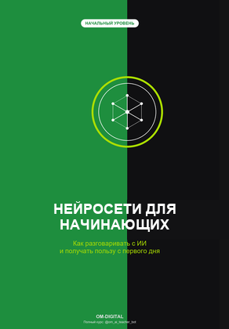
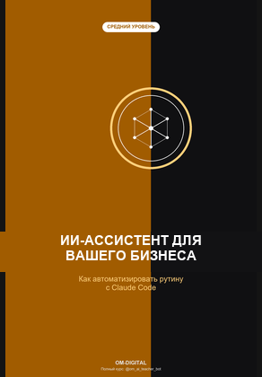
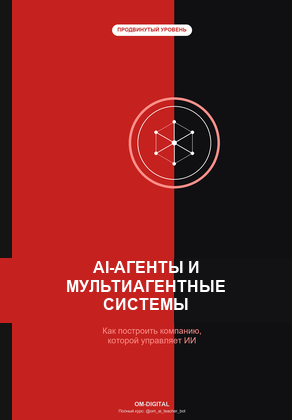

Превью v3: обложки книг вернули ПОЛНОСТЬЮ непрозрачными (оригинальные цвета), между книгами — реальный отступ 10px, тёмно-синее анимированное море видно ТОЛЬКО в промежутках/по краям — не сквозь сами обложки.



AI Studio
Книги OM-Digital
Бесплатные книги о работе с Claude и AI-агентами, включая разбор кейса Карманного Доктора
Исправление v3: раньше единая коллаж-картинка делалась частично прозрачной по всей площади — из-за этого 3 книги визуально сливались в одну сплошную полосу. Теперь коллаж разрезан на 3 отдельные ПОЛНОСТЬЮ непрозрачные обложки (оригинальные зелёный/оранжевый/красный цвета не тронуты), между ними и по краям — реальный CSS-отступ 10px, где виден анимированный тёмно-синий морской фон с переливами и волнами. Текст на обложках читается как прежде (это часть исходной картинки, не наложение).